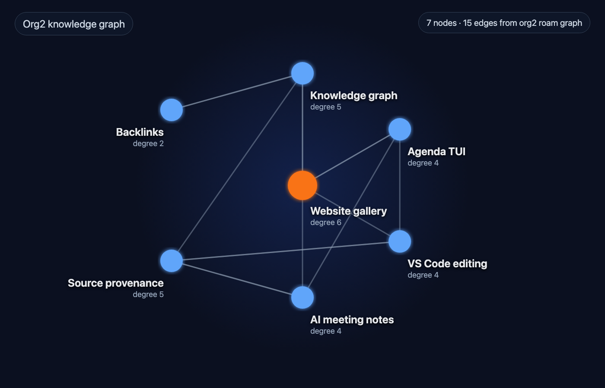
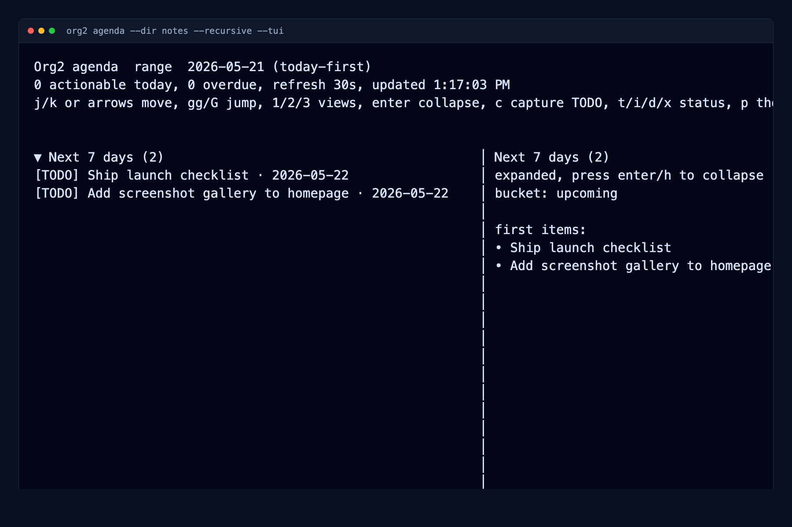
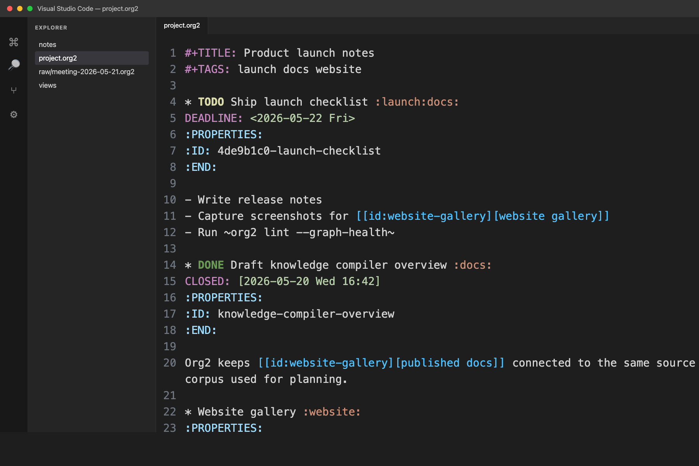
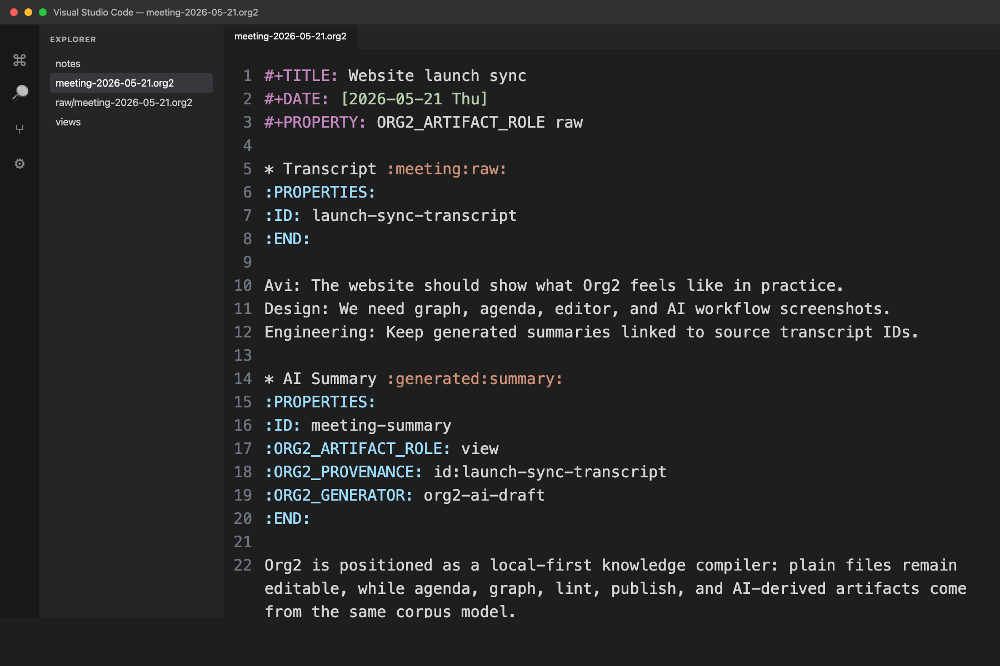

Org2
Plain-text knowledge for humans and agents working together
Org2 keeps notes, tasks, sources, and agent work in plain files. Humans can write and plan naturally; agents get enough structure to query the graph, track work, cite sources, and promote useful output without losing the trail.
Org2 is an early OSS project for turning a folder of notes, transcripts, tasks, links, and metadata into a corpus you can search, plan from, lint, refactor, hand to agents, and publish.
The idea
Org2 combines three useful traditions:
the portability and low friction of plain-text notes,
the structured programmability of Org-style TODOs, links, dates, tags, and properties,
the provenance and workflow boundaries agents need to work safely in a real knowledge base.
The result is a shared working graph: notes, tasks, plans, sources, generated drafts, and durable knowledge stay connected while still living in ordinary files. Raw imports can live in raw/, durable notes in the normal corpus, generated drafts in views/, and compiled indexes in compiled/. Agents can automate the pipeline, while humans still have natural places to inspect or steer when judgment matters.
What you can do with it
Plan from the same files you write in: build agendas and work views from TODOs, deadlines, scheduled dates, tags, and metadata across a whole workspace.
Track work without a separate app: keep project notes, decisions, follow-ups, and next actions connected in the same graph.
Ask better questions of your own notes: query headings, links, tasks, IDs, dates, and provenance instead of grepping a pile of text.
Use AI without losing the trail: keep transcripts and imports as sources, generate drafts with citations, and promote outputs into lasting notes when they are ready.
Keep links from rotting: generate IDs, inspect backlinks, linkify likely references, and lint graph health.
Publish when useful: turn the same source tree into HTML docs, a digital garden, or project documentation.
Screenshots




How it works
Org2 is a compiler/runtime for plain-text knowledge:
raw captures source material,
notes hold reviewed knowledge in normal editable files,
compiled stores resolved semantics such as agenda state, graph edges, provenance, and artifact roles,
views hold derived artifacts like agendas, work plans, diagnostics, AI drafts, and backlinks,
publish turns selected material into websites or shareable reports.
The practical payoff: one source tree can drive daily planning, work tracking, editor features, corpus-health checks, AI handoffs, and a public website without locking the work into one app.
Who it is for
Org2 is a good fit if you want:
local notes that remain useful outside any single app,
planning and work tracking that live beside the notes,
AI workflows with citations and clear promotion paths,
a queryable personal or team knowledge base,
automation that can read and write structured notes safely,
publishing from the same corpus you use privately.
It is early alpha, but already practical for CLI + VS Code workflows.
What Org2 is not trying to be
A hosted notes service.
An Emacs-only system.
A byte-for-byte clone of GNU Org internals.
A tool that hides where generated knowledge came from.
Start here
Reference post: Standalone Org rationale